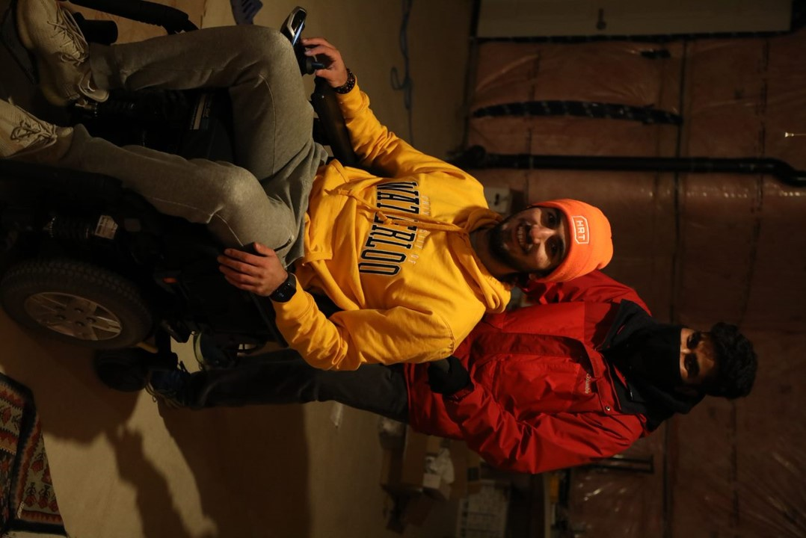

Summary
Now that we had a wheelchair, we needed a way to drive it without user input. All powered wheelchairs came with joysticks, but we needed some expandable interface we could integrate with our NVIDIA Jetson compute platform. We reached out to a Chief Engineer at Quantum who has been extremely helpful in our process. He pointed us to the right technical documentation, hardware, and necessary firmware upgrades. In short, the wheelchair uses a proprietary CAN-based system internally to communicate between the base and other devices. However, there are external devices we can utilize that expose a DB9 interface we can use with analog voltage signals, much easier than CAN. This was the avenue we decided to pursue. The DB9 interface is shown here:
Pin 3 (center) expects the "neutral" voltage, which is half of the power voltage (12V), so 6V. This is the voltage at which the wheelchair will be at stand-still. By increasing the voltage slightly (< 2V) on Pins 1 & 2, a proportional change in the wheelchair's forward speed & angular speed (direction) will be applied. We found in other sources that the 2 power pins (7 & 9) must be shorted together, and also that Pin 8 acts as the ground for any external device. All other pins can remain untouched. Of the potential devices we attempted integrating with the wheelchair, the Quantum QLogic Enhanced Display worked the best for interfacing over DB9. Thus, our embedded interface looks like the following:
We initially planned on passing analog voltages directly from our Xavier to the DB9 interface. However, this did not work as planned for several reasons. Primarily, none of our on-hand devices could output analog voltages, only PWMs at best. We also did not have easy access to a small DAC for conversion. Also, the voltages expected by the wheelchair were in the 4-8V range, and so could not be supplied by a 5V microcontroller directly. This all means some light signal processing is needed.
To begin, we originally expected to output these PWMs from the Xavier. However, Jetpack requires the hardware PWM peripherals to be configured before flashing. This would require us to recongifure them & reflash the device, which would erase several weeks of work carefully setting up the ML environment and dependencies, and so using an Arduino as a middle-man was an easier alternative. The Jetson and Arduino talk over a USB serial connection with the downstream packets containing a "mock" value of the X & Y joystick deflections.
To solve the first problem, a basic passive RC filter can be used to convert the PWM to an analog voltage between 0 - 5V.
The Arduino can output PWMs (using hardware) at 62.5kHz. We referenced several articles for selecting component values, such as these:
Accurate Fast Settling Analog Voltages from Digitial PWM Signals
Using PWM to Generate an Analog Output
After the PWM is now an analog voltage, it must be scaled to fit inside a 4-8V range.
This is done with a simple non-inverting opamp amplifier that amplifies 2x the input signal.
The final step is to ensure the incoming PWM signals are bounded to between 4-8V, which is easily done in the Arduino software.
The final circuit diagram looks like so:
The Enhanced Display (shown on the left) requires the "neutral" voltage to be the center of the power voltage, which is 12V. This is the purpose of the voltage divider on the left, with a voltage buffer going to Pin 3 (center reference). Pins 1 & 2 are then used for controlling speed & direction of the wheelchair. The final extra addition to the signal processing was an extra 10uF filter capacitor to remove any excess ripple or noise. Below is our initial breadboard mock-up of this circuit, and our final protoboard version:
This circuit worked well-enough for our purposes, but there definetly are improvements to be made. For instance, there is no easy hardware kill-switch currently. If the Arduino were to fail and create irrational PWM outputs, there is no easy way to disconnect the hardware components without turning off the chair entirely.
Now that Electrical is done, we can dive into the low-level embedded interface. Later posts will deal more with the pure software aspect of embedded, as well as with the motion controls. Now, the Arduino can only output a PWM at a 0-255 resolution, so our downstream message to the Arduino will be 1 byte each for the speed & direction values. The Arduino code will listen on the serial port for a package containing 2 bytes, or else will bring the wheelchair speed back to 0. The wheelchair base already has a velocity controller that handles the speed ramp up and down for us, and so this is not a concern. In terms of user control, we initially tested the setup by creating a small teleop interface using the keyboard. This lets us control the speed & direction magnitudes with the arrow keys, and enable us to sanity check everything worked together. The final step in testing was to mount the wheelchair up on cinderblocks. This allowed us to spin the wheels freely for testing without having the wheelchair run off on us (which it did once). Below is an early test video showcasing the initial breadboard setup and the resulting motion:
This progress greatly enables the rest of the team to test on the wheelchair platform, and still has some work in cleanup and optimization to do. Stay tuned for much more!
The Problem
Our goal is to enable powered wheelchair users to navigate with only their eyes. Without use of joysticks, head tilt, sip and puff, or other existing solutions that come with a laundry list of potential issues. In order to do this, we have 3 main problems to solve:
1. Accurately Detect Eye Gaze
2. Convert to Real-World Position
3. Send Motion Commands to Wheelchair
The individual solution to these 3 problems will be the subject of the remainder of the blog posts on this site.
Initial Hardware Summary
The eye tracking solution will make use of a simple common RGB cameras and a Machine Learning / Computer Vision based approach. In order to navigate it's environment and provide necessary safety for the user, the wheelchair will make use of modern autonomy solutions such as depth and tracking cameras. This is illustrated below, with the eye tracking example curtisy of Antoine Lamé.
Basic Illustration

Eye Tracking Example

Compute Selection
To begin our hardware summary, we focused on our compute hardware selection. The main requirement early on was something with enough raw AI computational power to support the simulatnous gaze tracking and autonomy stack. We immediately began researching the NVIDIA Jetson line and focused on the Xavier and Nano devices. Since we would be likely running 2 separate computationally intensive pipelines, the computational power was our main concern over power draw or size. Thus, we went with the NVIDIA Xavier AGX. Since these platforms are meant to be general purpose, they are great for this early stage while we iron out exactly what our pipelines will look like and exactly how much power we need.The Xavier runs Jetpack 4.4, an NVIDIA custom distro of Ubuntu 18. This drove our choice to use Robot Operating System (ROS) as our middle-ware since it easily supports Ubuntu-based systems. This will allow us to easily prototype our various software systems separately, and easily integrate them later during testing.
Sensor Selection
For our sensors we wanted devices that had easy open-source drivers that we could use, and that had sufficiently strong specifications. For autonomy we went with the Intel Realsense line because of their existing driver libraries, and many good thing we have seen others build with them. We opted for a depth camera to be used to obstacle avoidance and easy navigation, and a tracking camera for easy closed loop motion control at all levels. For gaze tracking we wanted an RGB camera that was cheap, common enough to purchase, and could operate fast enough. After some research we discovered the common V4L2 (Video for Linux 2) camera interface, and an open source ROS driver for it too. More research shows us the Logitech C920 HD camera that can do 720p at 60 fps, which was more than enough for our needs. The selection summary is shown below:
Summary
In order to get the project started, we needed to purchase a wheelchair that we will be able to prototype on. We chose a Quantum Q6 Edge HD powered chair as it was the best in terms of value, features, and extensibility. As an added benefit we are receiving engineering help from a contact at Quantum. The wheelchair operates with 2 12V car batteries, which powers an internal AAM (Advanced Actuator Module) which control the motors.
Photos
